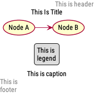
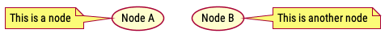
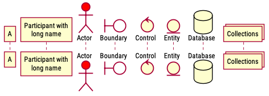
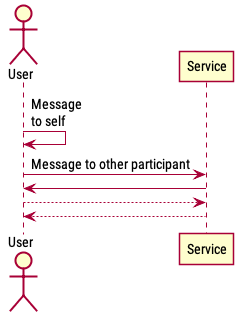
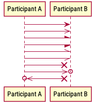
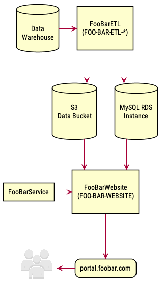
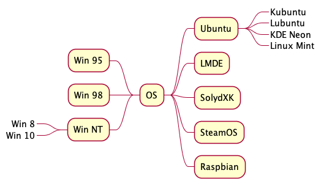
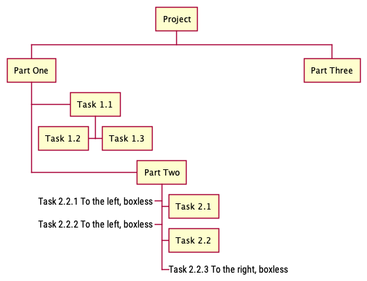

PlantUML
Table of Contents
1 Global
1.1 Base
@startuml // Params // UMLs @enduml
1.2 Comment
' Single-line comment /' Block comment '/
1.3 Annotations
1.3.1 Syntax
title|caption <Text>
title|caption
<Text>
<Text>
endtitle|endcaption
legend [left|right|center]
<Text>
<Text>
endlegend
[left|right|center] header|footer <Text>
[left|right|center] header|footer
<Text>
<Text>
endheader|endfooter
1.3.2 Example

title This Is Title caption This is caption legend This is legend endlegend right header This is header left footer This is footer endfooter (Node A) -> (Node B)
1.4 note
1.4.1 Syntax
// Directly below an entity
<style> note <side> : <text>
<style>
floating // Available in activity diagram
1.4.2 Example

(Node A) note left : This is a node (Node B) note right : This is another node
2 Sequence
2.1 Participants
2.1.1 Syntax
<type> <name> <options>
<name>
// Single word doesn't need ""
// Multiple words, or name containing non-letter characters need to be wrapped in ""
// Insert line breaks with "\n"
<options>
as <alias>
<bg_color>
<color_name> // E.g. #red
<color_hex> // E.g. #FFFFFF
order <int> // Custom order, otherwise sorted by declaration order
<type>
participant // Default type, can be skipped
actor
boundary
control
entity
database
collections
2.1.2 Example

participant A participant "Participant with\nlong name" as B actor Actor #red boundary Boundary #FFFFFF control Control entity Entity database Database collections Collections
2.2 Messages
2.2.1 Syntax
<name>|<alias> <arrow> <name>|<alias> : <message>
<name>|<alias>
// Can be the same participant, to send message to itself
<arrow>
<line>
- // Solid line
-- // Dotted line
<head>
left right
< > // Normal
<< >> // Thin
/ \ // Upper half
\ / // Lower half
// \\ // Thin upper half
\\ // // Thin lower half
x< >x // Change arrow to cross (lost message)
o< >o // Add circle, can combine with other styles
<direction>
-> etc. // Unidirection
<-> etc. // Bidirection
<message>
// Insert line breaks with "\n"
2.2.2 Example 1

actor User participant Service User -> User : Message\nto self User -> Service : Message to other participant User <- Service User --> Service User <-- Service
2.2.3 Example 2

participant "Participant A" as A participant "Participant B" as B A -> B A ->> B A -\ B A -/ B A -\\ B A -// B A ->x B A ->>o B A o//-//x B
3 Component
3.1 Example

!include <aws/common>
!include <aws/general/users/users>
skinparam DefaultTextAlignment center
skinparam rectangle {
RoundCorner<<round>> 20
}
skinparam agent<<users>> {
BackgroundColor transparent
Shadowing false
}
hide stereotype
database "\nData\nWarehouse\n" as DW
database "\nS3\nData Bucket\n\n" as S3
database "\nMySQL RDS\n Instance\n\n" as RDS
rectangle "\nFooBarETL\n(FOO-BAR-ETL-*)\n" as ETL
rectangle "\nFooBarWebsite\n(FOO-BAR-WEBSITE)\n" as WEB
rectangle "FooBarService" as SERVICE
rectangle "portal.foobar.com" <<round>> as URL
USERS(USER, " ")
DW -> ETL
ETL --> S3
ETL --> RDS
S3 --> WEB
RDS --> WEB
SERVICE -> WEB
WEB --> URL
URL -left-> USER
4 Mind Map
4.1 Syntax
@startmindmap + <Root> ++ <Text> // Each level indents 1 char ++ <Text> // Branch to right -- <Text> // Branch to left ---_ <Text> // Boxless @endmindmap
4.1.1 Example

+ OS ++ Ubuntu +++_ Kubuntu +++_ Lubuntu +++_ KDE Neon +++_ Linux Mint ++ LMDE ++ SolydXK ++ SteamOS ++ Raspbian -- Win 95 -- Win 98 -- Win NT ---_ Win 8 ---_ Win 10
5 Work Breakdown Structure
5.1 Syntax
+ <Root> + <Text> // Each level indents 1 space + <Text> // Branch to right - <Text> // Branch to left + <Text> +_ <Text> // Branch to right, boxless -_ <Text> // Branch to left, boxless
5.2 Example

@startwbs + Project + Part One + Task 1.1 - Task 1.2 + Task 1.3 + Part Two + Task 2.1 + Task 2.2 -_ Task 2.2.1 To the left, boxless -_ Task 2.2.2 To the left, boxless +_ Task 2.2.3 To the right, boxless + Part Three @endwbs
6 Graphviz DOT
6.1 Syntax
@startdot
diagraph <Name> {
...
}
@enddot
7 Params
7.1 Style
skinparam monochrome true|reverse skinparam shadowing true|false
7.2 Font
skinparam defaultfontname "<font_name>" skinparam defaultfontsize <int>
7.3 Line
skinparam linetype ortho|polyline
7.4 Component
skinparam <component> {
<param> <value>
}
skinparam rectangle {
roundcorner 10
}
7.5 Stereotype
hide stereotype // Hide all stereotypes show <<foo>> stereotype // Show specific stereotypes as exceptions
8 Install
brew install graphviz brew install plantuml